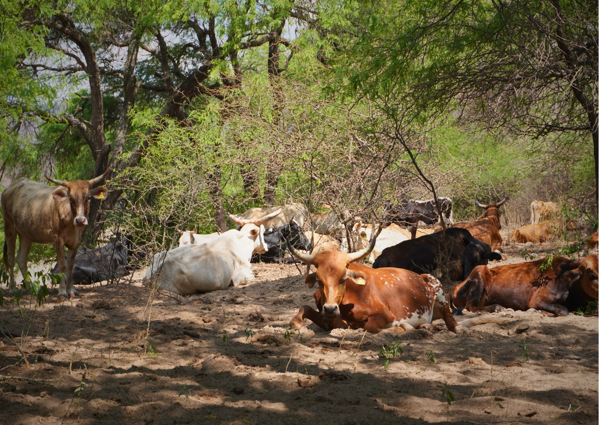
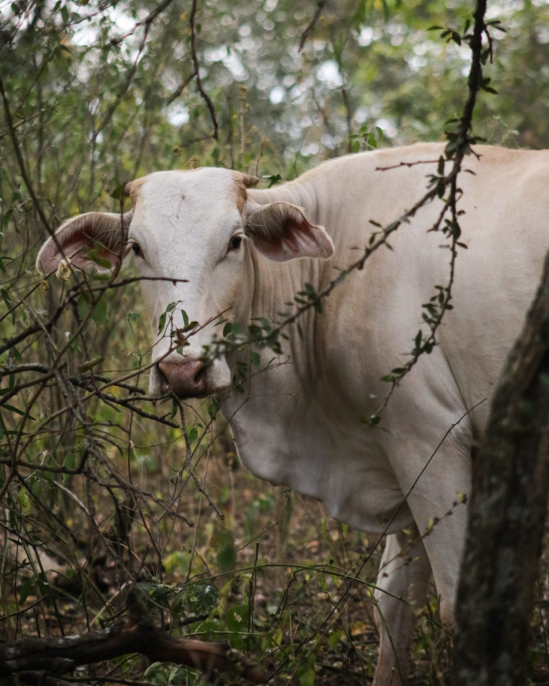
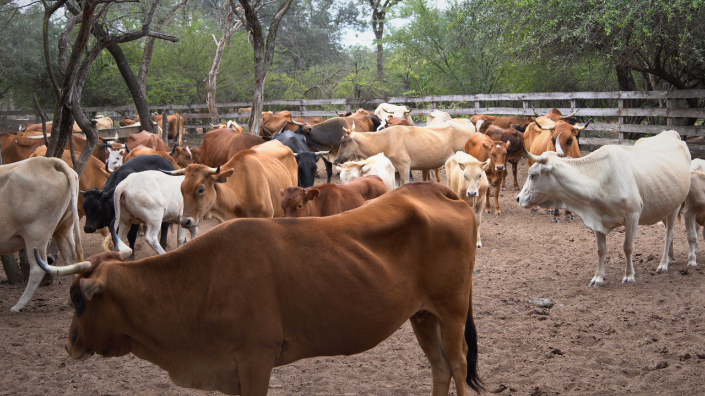

Apartado 01 · Línea productiva
Ganadería bajo bosque
La ganadería chaqueña no vive de pasturas sembradas: vive del monte. El bosque es la base real del sistema productivo, durante todo el año.
Ganadería bajo bosque
El bosque, base de la economía.
El bosque es el recurso natural estratégico: conservarlo es importante, pero hacerlo productivo es lo que garantiza su permanencia. El sistema ganadero chaqueño no vive de pasturas sembradas —reconoce al bosque como su principal oferta de forraje, durante todo el año.
Ganadería bajo bosque en números
El bosque, gestionado.

La articulación
Cooperación con propósito.
Consolidar alianzas entre productores, asociaciones, instituciones públicas, universidades, centros de investigación y organismos de la cooperación es una estrategia del Modelo Conservación Productiva para impulsar programas, políticas y acciones coordinadas.
El modelo en la práctica
Aplicación de los Criterios de Sostenibilidad.
La base de la sostenibilidad es la planificación.
Control de las áreas de pastoreo
Planificación para el aprovechamiento del forraje: se ordena el uso del monte para que el bosque siga ofreciendo alimento temporada tras temporada.
Disponibilidad permanente de agua y su distribución equidistante
Una red de distribución de agua que llega a cada área de pastoreo, para aprovechar el forraje de forma pareja y sin sobrecargar el monte.

El resultado
Una carne bovina de bosque con identidad propia.
La Carne Bovina de Bosque Chaqueño es el valor agregado a la conservación del bosque: la prueba de que mantener el monte en pie también produce.
La conservación del bosque será sostenible en el tiempo cuando el mercado reconozca los atributos de la carne bovina de bosque y esté dispuesto a un pago mayor.
En el mapa
Los predios ganaderos, georreferenciados.
Ubicá en el geoportal los 29 predios ganaderos y su superficie de bosque bajo manejo, junto a los centros apícolas, la Red de artesanas Alma de Monte y los puntos de turismo comunitario.